Para que serve
O Profissional é o cadastro das pessoas que trabalham na fábrica e usam o sistema: dados pessoais e documentos, endereço, contatos, setor, cargo, matrícula, grupo, ocupações (CBO, a classificação oficial de ocupações) e funções profissionais. Quem mantém o cadastro de pessoal (Administração do sistema e Recursos Humanos, a validar com a área) usa a tela quando uma pessoa entra, muda de função ou sai. A conta de acesso (login e senha) é criada depois, na tela Conta usuário, ligada a este mesmo cadastro.
Quem usa e em que etapa do processo
Quem usa
- Inferência, a validar com a área: a Administração do sistema e Recursos Humanos, para cadastrar e manter as pessoas; a Garantia da Qualidade, para conferir funções e qualificações.
- Quem pode abrir, incluir, alterar, excluir, imprimir e ver o histórico está em "Quem pode usar (permissões)", mais abaixo.
Em que etapa do processo entra (tela 1 do menu Administração, módulo Principal)
- Pelo menu Administração › Profissional.
- Pelo botão VOLTAR da própria tela de edição e depois de salvar ou excluir, pelo botão OK.
- Pela Conta usuário, que parte do cadastro do profissional.
O que acontece depois (para onde o trabalho segue)
- Incluir: grava o profissional, as ocupações e as funções escolhidas, registra "INCLUSÃO DO REGISTRO" no histórico e envia o aviso padrão 1 ("Novo Profissional... foi cadastrado. Providenciar Criação de Login e Configuração de Perfil.") com o nome e o CPF. Volta à lista com "Inclusão realizada com sucesso!".
- Alterar: exige justificativa, grava os campos, apaga e regrava todas as ocupações e funções do profissional e registra no histórico cada campo alterado. Volta à lista com "Alteração realizada com sucesso!".
- Inativar: é uma alteração com a justificativa de inativação. O profissional inativo não entra no sistema.
- Excluir: abre uma tela própria; com a justificativa, o profissional vai para a lixeira (LIXEIRA = 1) e some da lista. Volta à lista com "Exclusão realizada com sucesso!".
Fonte: Resumo da tela e fluxo da tela (leitura do código e dos testes). O que for leitura da área precisa ser validado com a área.
Antes de começar (o que precisa existir)
| Precisa existir | Para quê | Onde se cadastra |
|---|---|---|
| Documentos da pessoa (CPF, nome da mãe, data de nascimento, endereço com CEP) | São campos obrigatórios do cadastro | Com a própria pessoa ou com o RH |
| Grupo (obrigatório quando o módulo Estoque está ativo) | Define a que almoxarifados a pessoa tem acesso no Estoque | Menu Administração › Grupo de usuários |
| Função profissional (se a pessoa exerce alguma) | Aparece na grade Funções; outros módulos usam, por exemplo, para saber quem é Auditor | Menu Administração › Funções profissionais |
| Setor (opcional) | Lista de locais da Estrutura funcional | Cadastro de locais (Estrutura funcional) |
Passo a passo
Situação das imagens (14/11/2026): imagens reaproveitadas dos testes de 05/10/2026 (rodada 1) e 26/10/2026 (rodada 3), cada uma conferida contra o texto. Sem imagem: lupa Consultar, relatório impresso, busca de endereço pelo CEP, exclusão concluída e histórico de um profissional inativado.
Consultar a lista
- No menu, abra Administração › Profissional. A tela mostra o quadro "Pesquisa" e a lista vazia.
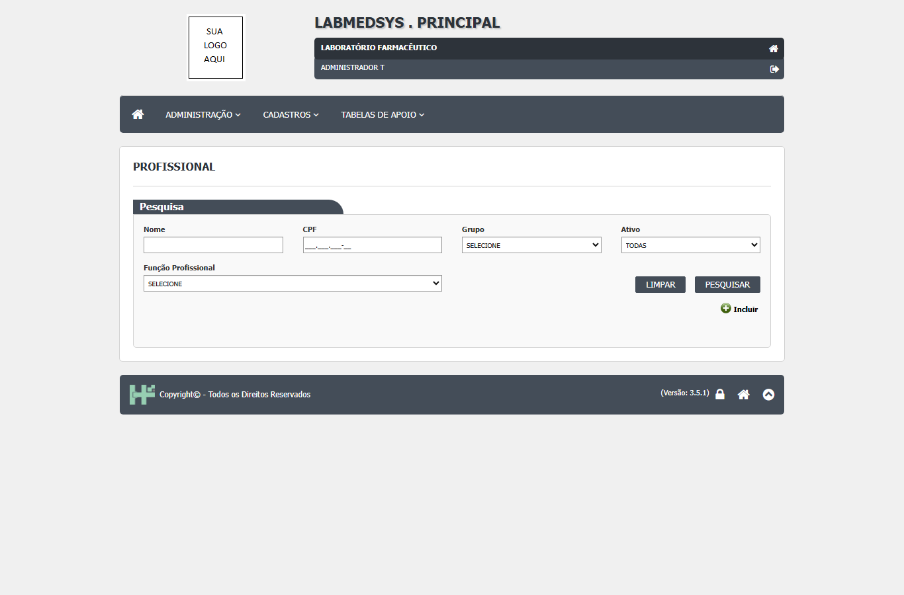
Figura 1: a tela Profissional ao abrir: filtros Nome, CPF, Grupo, Ativo e Função Profissional, botões LIMPAR e PESQUISAR e o botão Incluir.
- Preencha um ou mais filtros: Nome (parte do nome), CPF, Grupo, Ativo (Todas, Sim ou Não) e Função Profissional. Clique em PESQUISAR. Sem filtro, a lista traz todos os profissionais. O nome não pode começar com ponto (usuario_lst.aspx.cs:171).
- A lista mostra ID, Nome, CPF e Ativo, com os ícones Editar, Excluir e Log em cada linha, 10 por página; os títulos das colunas ordenam. IMPRIMIR e o ícone do Excel só aparecem depois de uma pesquisa com resultado. LIMPAR esvazia os filtros e a lista.
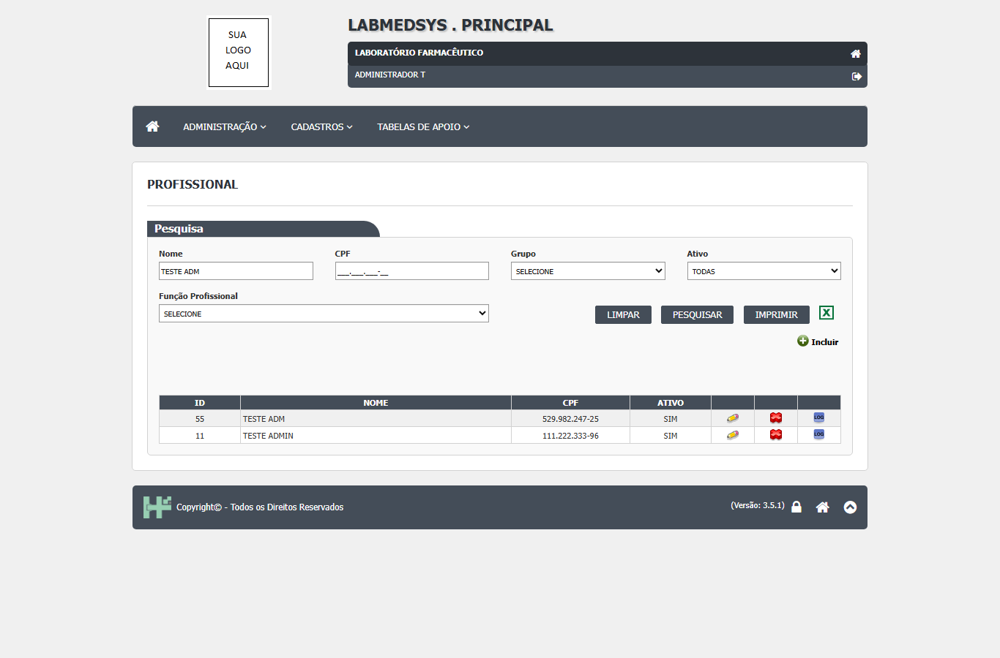
Figura 2: lista depois de pesquisar "TESTE ADM": dois profissionais com os ícones lápis (Editar), X vermelho (Excluir) e LOG, e os botões IMPRIMIR e Excel.
Incluir um profissional
- Clique em Incluir (o sinal de mais). Abre o cadastro em branco, com os quadros Dados Pessoais, Endereço, Setor, Ocupações e Funções.
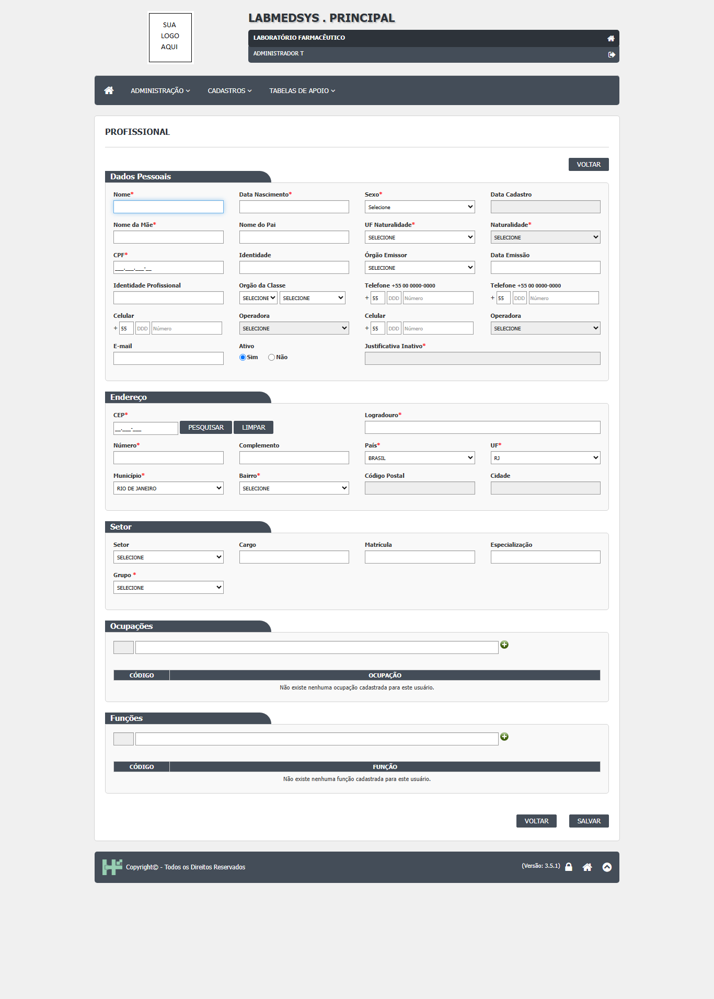
Figura 3: o cadastro de profissional em branco, com os campos obrigatórios marcados com asterisco vermelho.
- Preencha Dados Pessoais: Nome, Data de Nascimento, Sexo, Nome da Mãe, UF e Naturalidade, CPF; e, se tiver, Identidade, Órgão Emissor, Data de Emissão, Identidade Profissional e Órgão da Classe, telefones, celulares e e-mail. Em Endereço, digite o CEP e clique em PESQUISAR para preencher o endereço, ou escolha País, UF, Município e Bairro; informe Logradouro e Número (S/N se não houver). Em Setor, escolha Setor, Cargo, Matrícula, Especialização e o Grupo.
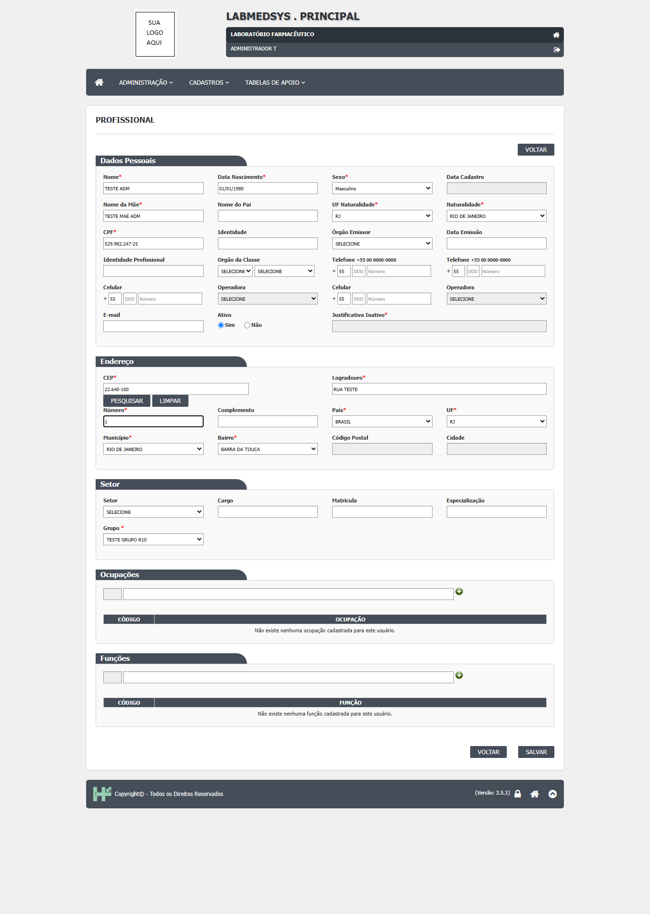
Figura 4: cadastro preenchido (nome "TESTE ADM", CPF, endereço e Grupo escolhido), pronto para salvar.
- Em Ocupações e Funções, digite pelo menos 2 letras, escolha na lista e clique no sinal de mais. Os itens só são gravados ao clicar em SALVAR.
- Clique em SALVAR e, na pergunta "Confirma a inclusão do item?", em SIM. Os campos obrigatórios só são cobrados depois do SIM (CT-PRI-041). Na captura de 05/10/2026 o aviso de sucesso aparece assim:
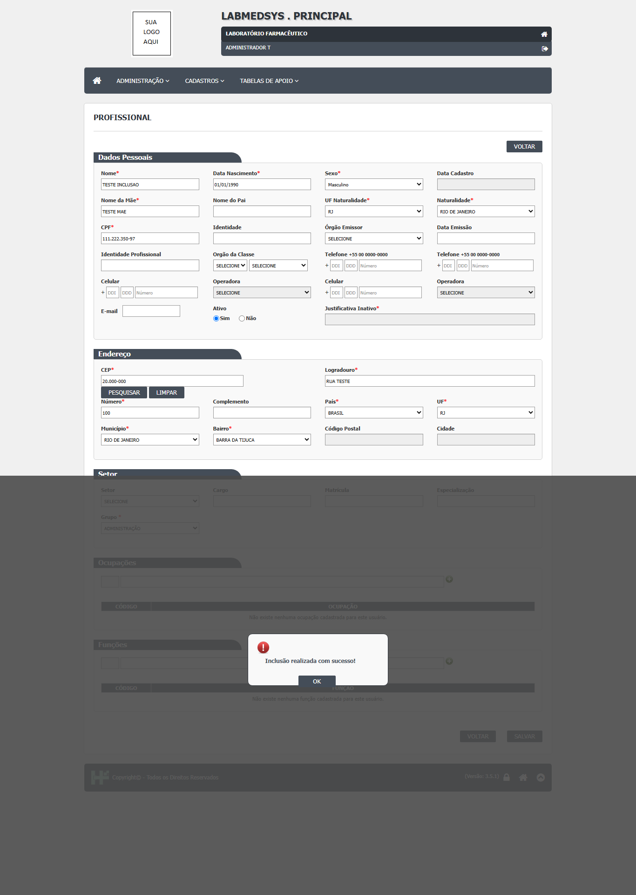
Figura 5: aviso "Inclusão realizada com sucesso!" sobre o cadastro preenchido (nome "TESTE INCLUSAO"); na captura o aviso vem com um ícone vermelho de alerta, que não combina com o texto de sucesso.
- Peça a criação da conta de acesso na tela Conta usuário.
Alterar, adicionar ou retirar uma função
- Na lista, clique no lápis. Altere o que precisa e preencha Digite sua Justificativa (obrigatória). Para acrescentar uma função, digite, escolha e clique no sinal de mais; para retirar, clique no X vermelho da linha da grade.
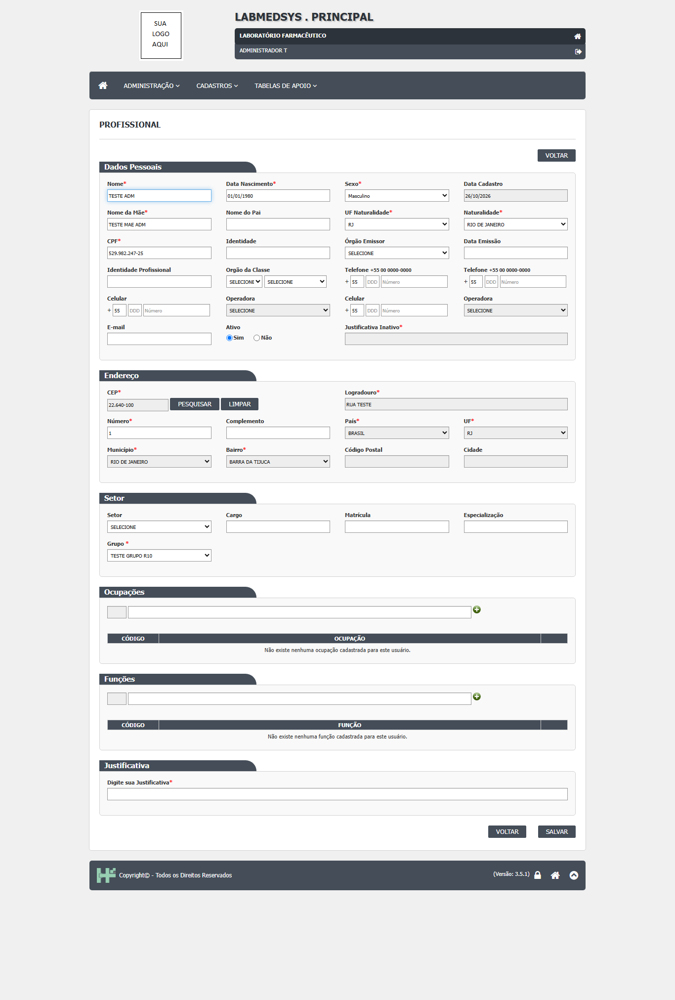
Figura 6: cadastro aberto para alteração: aparece o quadro Justificativa ("Digite sua Justificativa") e o CEP e o endereço ficam em cinza.
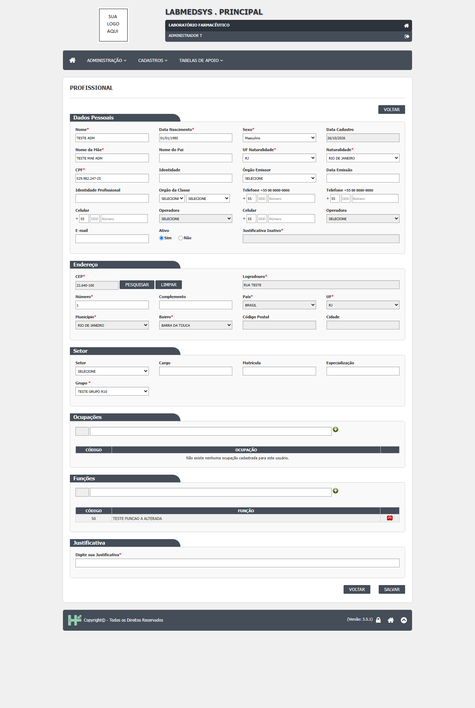
Figura 7: uma função (código 50) já acrescentada na grade Funções, com o X vermelho para retirar; ainda não gravada, falta a justificativa e o SALVAR.
- Clique em SALVAR e depois em SIM.
Inativar
- Marque Ativo: Não e informe a Justificativa Inativo. Um profissional inativo não entra no sistema e fica com a tela travada; para alterá-lo ou excluí-lo é preciso antes reativar.
Excluir
- Na lista, clique no X vermelho. Abre a tela de exclusão com nome, data de nascimento, nome da mãe e a Justificativa (obrigatória). Clique em EXCLUIR e SIM. Você não pode excluir o seu próprio cadastro.
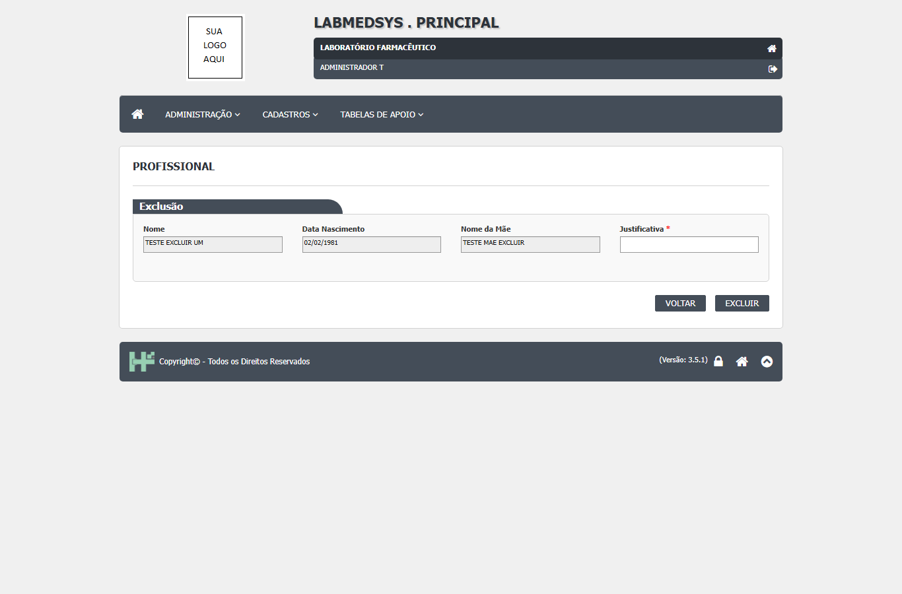
Figura 8: tela de exclusão de um profissional ativo: Nome, Data de Nascimento e Nome da Mãe travados, Justificativa a preencher e botões VOLTAR e EXCLUIR.
Ver o histórico
- Na lista, clique no ícone LOG. Abre a janela "Log Alteração - Profissional" com o campo mudado, valor antigo, valor novo, data, hora, usuário e justificativa, do mais recente para o mais antigo, 4 por página.
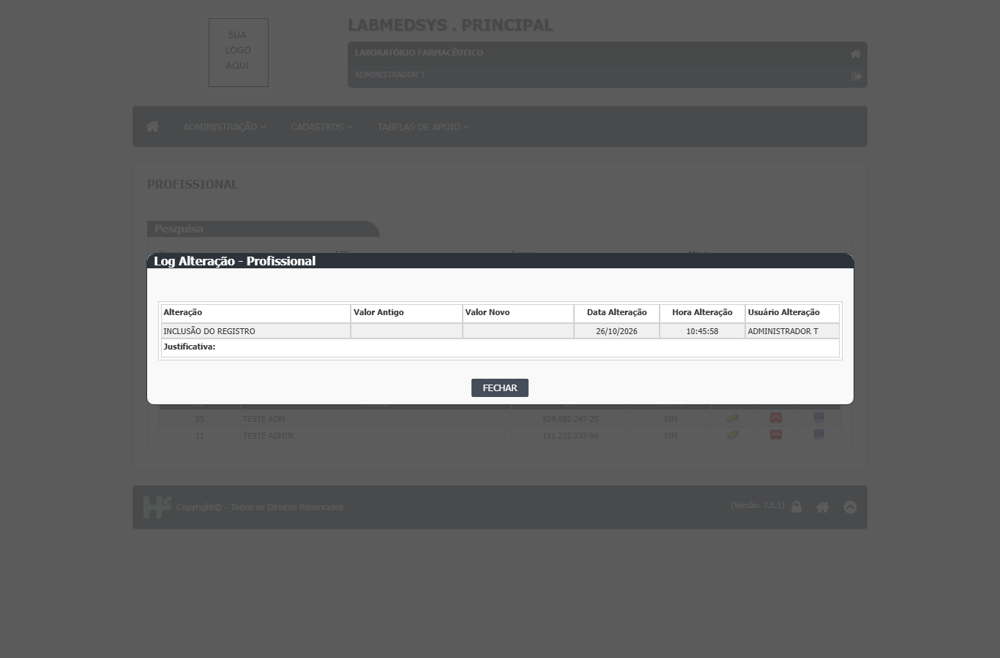
Figura 9: histórico de um profissional recém-cadastrado: uma linha "INCLUSÃO DO REGISTRO" com data, hora e usuário (justificativa em branco na inclusão).
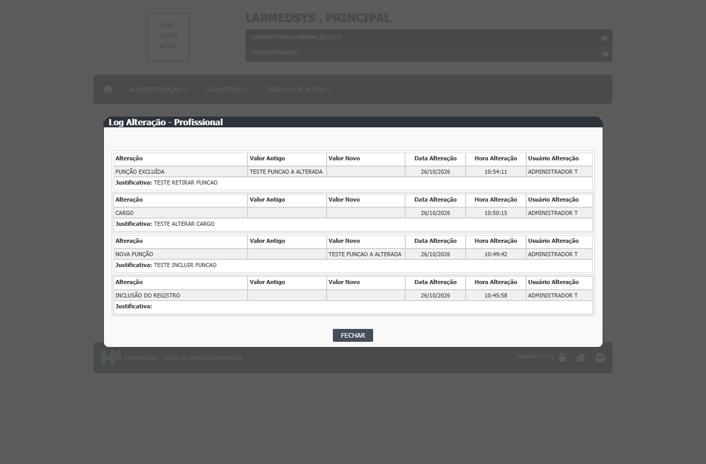
Figura 10: histórico depois de acrescentar e retirar uma função e alterar o cargo: "NOVA FUNÇÃO", "CARGO" (valores antigo e novo em branco, ver DV-PRI-004) e "FUNÇÃO EXCLUÍDA", cada um com a sua justificativa.
O que acontece ao confirmar ou salvar
- Incluir: grava o profissional, as ocupações e as funções escolhidas, registra "INCLUSÃO DO REGISTRO" no histórico e envia o aviso padrão 1 ("Novo Profissional ... foi cadastrado. Providenciar Criação de Login e Configuração de Perfil.") com nome e CPF (usuario_ed.aspx.cs:1286-1302; bllUsuario.cs:355-398). O nome é gravado em maiúsculas.
- Alterar: exige justificativa, grava os campos, apaga e regrava todas as ocupações e funções do profissional e registra no histórico cada campo alterado (dalUsuario.cs:1076-1113; bllUsuario.cs:400-712). A mudança de Grupo não aparece no histórico (DV-PRI-033).
- Inativar: é uma alteração com a justificativa de inativação; o histórico mostra "ATIVO SIM → NÃO" (CT-PRI-045).
- Excluir: o profissional vai para a lixeira (marca de excluído) e some da lista; a exclusão não grava evento no histórico (dalUsuario.cs:1213-1256; DV-PRI-014).
O que o sistema recusa
- Campos obrigatórios em branco, um por vez: "O nome do usuário é obrigatório!" e as equivalentes para sexo, nome da mãe, UF, naturalidade, CPF, CEP, logradouro, número, país, UF, município, bairro, grupo e data de nascimento (CT-PRI-041).
- "O CPF informado é inválido!" (dígitos errados ou sequência repetida).
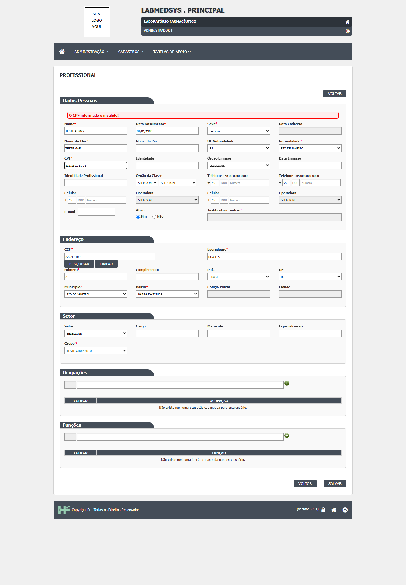
Figura 11: CPF 111.111.111-11 recusado: faixa vermelha "O CPF informado é inválido!" no alto de Dados Pessoais.
- "O CPF informando já foi cadastrado: [nome]!" (CPF repetido entre os não excluídos; a frase tem "informando" em vez de "informado").
Figura 12: CPF já usado por outro profissional: faixa vermelha "O CPF informando já foi cadastrado: TESTE ADM!".
- "A Justificativa é obrigatória!" ao alterar sem justificativa.
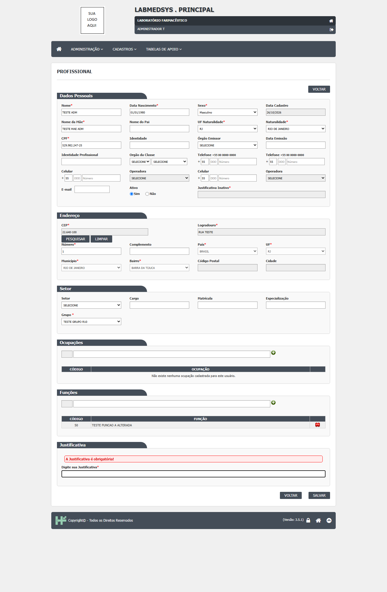
Figura 13: alteração sem justificativa: "A Justificativa é obrigatória!" no quadro Justificativa (a função 50 continua na grade, sem gravar).
- "A justificativa é obrigatório para desativar o usuário!" ao marcar Ativo: Não sem justificativa (CT-PRI-045).
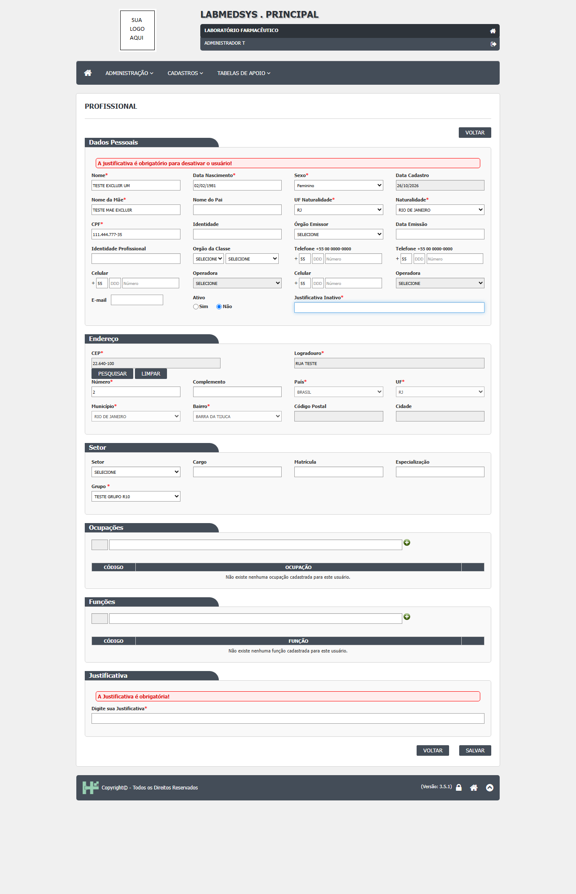
Figura 14: Ativo marcado como Não sem a Justificativa Inativo: faixa "A justificativa é obrigatório para desativar o usuário!" e também "A Justificativa é obrigatória!" no quadro de baixo.
- "A justificativa da exclusão do usuário é obrigatória!" ao excluir sem justificativa (CT-PRI-049). Com o profissional inativo, o campo Justificativa da exclusão vem cinza (desabilitado) e a exclusão é sempre recusada com essa mesma frase (DV-PRI-049).
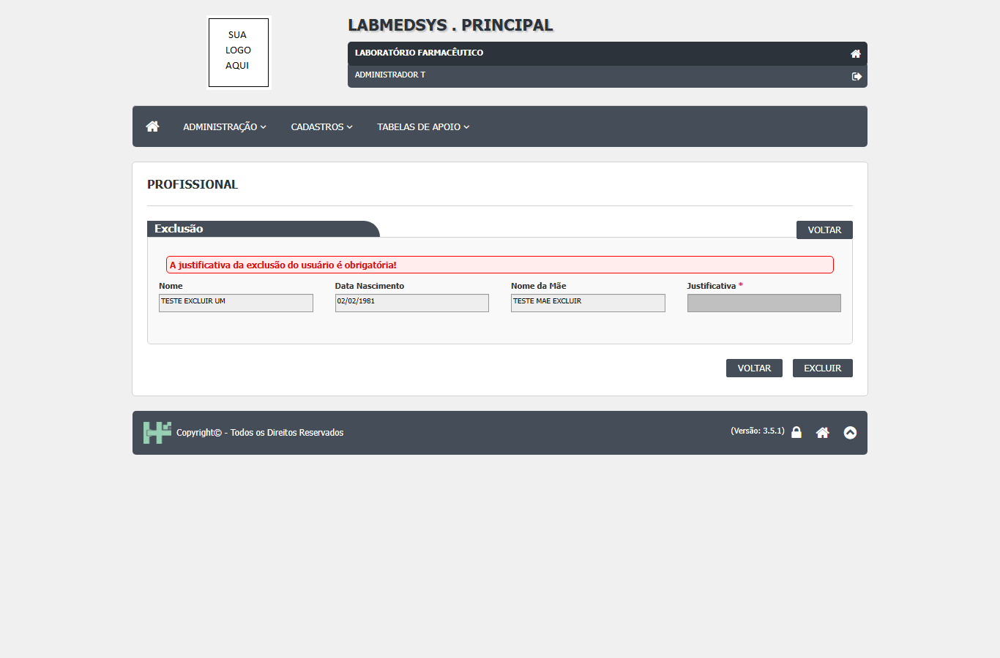
Figura 15: exclusão recusada: faixa "A justificativa da exclusão do usuário é obrigatória!" com o campo Justificativa em cinza (caso de profissional inativo).
- Data de nascimento em branco, anterior a 1900 ou futura ("A data de nascimento do usuário é inválida!"); e-mail fora do formato; identidade profissional sem Órgão da Classe; ocupação ou função repetida (mensagens em "Mensagens do sistema").
- "Usuário sem permissão para realizar esta exclusão!" ao tentar excluir o próprio cadastro.
Quem pode usar (permissões)
- A tela usa a função 14 (Profissional): Incluir, Alterar, Excluir, Imprimir/Excel e Consultar log; a consulta vale para quem tem a tela. Na lista, o lápis depende de Alterar, a lupa aparece para quem tem consulta e não tem Alterar, o X de Excluir, o ícone LOG de Consultar log e Incluir de Incluir (ClassePaiLst.cs:189-257).
- O usuário de número 1 não aparece para os demais (dalUsuario.cs:114-117).
- A lista bloqueia quem não tem a função 14 (CT-PRI-060). A edição e o relatório abrem pelo endereço para quem não tem permissão (DV-PRI-025, Alta, CT-PRI-061 e 068), e salvar e excluir não conferem permissão no servidor: só o botão fica escondido (a confirmar, CT-PRI-ADM01-03).
- Quem cadastra e quem confere são a mesma pessoa; não há aprovação da Qualidade. Ponto para validar com a área.
Cuidados e falhas conhecidas
- Consulta não é somente leitura (DV-PRI-023): quem só tem consulta vê os campos editáveis e os botões de adicionar ocupação e função; só o SALVAR some.
- Histórico incompleto ou errado (DV-PRI-004): o item CARGO sai com valor antigo e novo em branco (visto na Figura 10) e o DDI do telefone aparece como alterado sem ninguém tocar; a troca de Grupo não é registrada (DV-PRI-033). Se houver dúvida, confira os dados na própria tela.
- Excluir não tem volta pelas telas e não deixa rastro (DV-PRI-014): o profissional excluído some da lista e ninguém consegue ver o histórico dele. Excluir um profissional com conta de acesso não gera aviso (DV-PRI-006). Prefira inativar.
- Profissional inativo não pode ser alterado nem excluído sem antes reativar (DV-PRI-049).
- A inclusão pode voltar à lista sem a mensagem de sucesso (assim foi em 26/10/2026; em 05/10/2026 o aviso apareceu, Figura 5) e o nome é gravado sem dígitos ("TESTE ADM01" ficou "TESTE ADM", DV-PRI-032): confira na lista.
- Endereço de edição com número inválido (
id=abc) mostra uma página de erro técnica e com número inexistente abre um cadastro em branco (DV-PRI-026 e DV-PRI-051). - O texto da justificativa é cortado em 255 caracteres sem aviso (CT-PRI-081).
- As funções e ocupações são apagadas e regravadas a cada salvamento: a data e o autor originais de cada função se perdem (a confirmar com o DBA).
- A pesquisa por nome com apóstrofo descarta o apóstrofo (CT-PRI-100).
Ícones e botões da lista
| Ícone ou botão | O que faz | Quando aparece |
|---|---|---|
| PESQUISAR | Lista os profissionais pelos filtros | Sempre |
| LIMPAR | Esvazia filtros e lista | Sempre |
| Incluir (sinal de mais) | Abre o cadastro em branco | Para quem tem a função de incluir |
| Lápis (Editar) | Abre o cadastro para alterar | Em cada linha, para quem tem Alterar |
| Lupa (Consultar) | Abre o cadastro para ver | Para quem tem consulta e não tem Alterar |
| X vermelho (Excluir) | Abre a tela de exclusão com justificativa | Em cada linha, para quem tem Excluir |
| LOG | Abre o histórico do profissional | Em cada linha, para quem tem Consultar log |
| IMPRIMIR e ícone do Excel | Geram o relatório da pesquisa (o Excel não leva os filtros de Grupo e de Função) | Depois de uma pesquisa com resultado, para quem tem a função de impressão |
Campos da tela
Caminhos das fontes na seção Resumo da tela. "Sim (servidor)" quando o servidor também recusa; "Só na tela" quando só o navegador confere.
Pesquisa
| Campo na tela | Tipo | Obrigatório | Regra, limite ou valores possíveis | Fonte |
|---|---|---|---|---|
| Nome | Texto de até 255 caracteres | Não | Procura dentro do nome (contém), em maiúsculas; não pode começar com ponto. O campo só aceita letras, números, espaço e acentos (no navegador) | usuario_lst.aspx:47-48; usuario_lst.aspx.cs:149-172; dalUsuario.cs:121 |
| CPF | Máscara 999.999.999-99 | Não | Igual ao CPF digitado | usuario_lst.aspx:54-55; dalUsuario.cs:125 |
| Grupo | Lista | Não | Grupos de usuários ativos; "SELECIONE" = todos | usuario_lst.aspx.cs:55-63; dalUsuario.cs:132-135 |
| Ativo | Lista | Não | Todas, Sim, Não | usuario_lst.aspx:64-68; dalUsuario.cs:127-130 |
| Função Profissional | Lista | Não | Funções profissionais ativas; filtra quem tem a função | usuario_lst.aspx.cs:65-73; dalUsuario.cs:105-110 |
| Colunas da lista | Texto | Não se aplica | ID, Nome, CPF (formatado), Ativo; ordenáveis; 10 por página | usuario_lst.aspx:93-149 |
Dados Pessoais (cadastro)
| Campo na tela | Tipo | Obrigatório | Regra, limite ou valores possíveis | Fonte |
|---|---|---|---|---|
| Nome | Texto, até 270 no campo | Sim (servidor) | "O nome do usuário é obrigatório!". Gravado em maiúsculas e sem espaços repetidos. A coluna do banco tem 255 caracteres | usuario_ed.aspx:117; usuario_ed.aspx.cs:1217; SIS_USUARIO.sql:11 |
| Data Nascimento | Data dd/mm/aaaa | Sim (servidor) | De 01/01/1900 até hoje; "A data de nascimento do usuário é obrigatória!" ou "é inválida!" | usuario_ed.aspx:123-132; usuario_ed.aspx.cs:58 |
| Sexo | Lista | Sim (servidor) | "O sexo do usuário é obrigatório!" | usuario_ed.aspx:142 |
| Data Cadastro | Data e hora | Não se aplica | Travado; preenchido pelo sistema | usuario_ed.aspx:150; usuario_ed.aspx.cs:330 |
| Nome da Mãe | Texto, até 255 | Sim (servidor) | "O nome da mãe do usuário é obrigatório!". Gravado em maiúsculas | usuario_ed.aspx:163; usuario_ed.aspx.cs:1220 |
| Nome do Pai | Texto, até 255 | Não | Gravado em maiúsculas | usuario_ed.aspx:170 |
| UF Naturalidade e Naturalidade | Listas encadeadas | Sim (servidor) | "A UF da naturalidade do usuário é obrigatório!" e "A naturalidade do usuário é obrigatório!" | usuario_ed.aspx:181-191 |
| CPF | Máscara | Sim (servidor) | "O CPF é obrigatório!". Dígitos conferidos; sequências repetidas recusadas ("O CPF informado é inválido!"); único entre os não excluídos ("O CPF informando já foi cadastrado: [nome]!") | usuario_ed.aspx:203; usuario_ed.aspx.cs:1980-2009; dalUsuario.cs:169-171 |
| Identidade | Letras e números, até 15 | Não | Livre dentro do filtro | usuario_ed.aspx:208 |
| Órgão Emissor | Lista | Não | A obrigatoriedade está comentada no código | usuario_ed.aspx:219 |
| Data Emissão | Data | Não | Se informada: depois do nascimento e até hoje | usuario_ed.aspx:232; usuario_ed.aspx.cs:61-65 |
| Identidade Profissional | Números, até 15 | Não | Se preenchida, o Órgão da Classe passa a ser obrigatório | usuario_ed.aspx:241; usuario_ed.aspx.cs:67 |
| Orgão da Classe (sigla e nome) | Duas listas ligadas | Condicional (servidor) | "O órgão da classe da identidade profissional é obrigatório!" | usuario_ed.aspx:256-260 |
| Telefone 1 e 2 | DDI (4), DDD (3), número (9) | Não | Se não houver número, o DDI é apagado ao gravar | usuario_ed.aspx:269-301; usuario_ed.aspx.cs:1144-1162 |
| Celular 1 e 2 e Operadora | DDI, DDD, número e lista | Não | A Operadora só habilita com DDD e número | usuario_ed.aspx:313-357; usuario_ed.aspx.cs:1730-1783 |
| Texto, até 255 | Não | Formato conferido ("O e-mail do usuário é inválido!"); gravado em minúsculas | usuario_ed.aspx:366-367; usuario_ed.aspx.cs:1258 | |
| Ativo | Sim ou Não | Não se aplica | Ao marcar Não, a Justificativa Inativo passa a ser obrigatória | usuario_ed.aspx:372; usuario_ed.aspx.cs:1546-1565 |
| Justificativa Inativo | Texto, até 255 | Condicional (servidor) | "A justificativa é obrigatório para desativar o usuário!" | usuario_ed.aspx:383-386 |
Endereço (cadastro)
| Campo na tela | Tipo | Obrigatório | Regra, limite ou valores possíveis | Fonte |
|---|---|---|---|---|
| CEP e PESQUISAR/LIMPAR | Máscara 99.999-999 | Sim para Brasil (servidor) | "O CEP do usuário é obrigatório!" / "...é inválido!". PESQUISAR traz logradouro, UF, município e bairro; sem resposta: "CEP não encontrado na base de dados, refaça a busca ou digite o endereço! " | usuario_ed.aspx:410-428; usuario_ed.aspx.cs:1434-1498 |
| Logradouro | Texto, até 255 | Sim (servidor) | "O logradouro do usuário é obrigatório!" | usuario_ed.aspx:437 |
| Número | Texto, até 10 | Sim (servidor) | "O Número é obrigatório! Informe o número ou digite S/N" | usuario_ed.aspx:450 |
| Complemento | Texto, até 255 no campo | Não | A coluna do banco tem 60 caracteres | usuario_ed.aspx:457; SIS_USUARIO.sql:27 |
| País, UF, Município e Bairro | Listas encadeadas | Sim (servidor) | Início em Brasil, RJ, Rio de Janeiro. Fora do Brasil, passam a valer Código Postal e Cidade | usuario_ed.aspx:465-513; usuario_ed.aspx.cs:96-106 e 1598-1638 |
Setor, grupo, ocupações e funções (cadastro)
| Campo na tela | Tipo | Obrigatório | Regra, limite ou valores possíveis | Fonte |
|---|---|---|---|---|
| Setor | Lista | Não | Lista de locais (Estrutura funcional). A "Subdivisão/Seção" existe no código e está escondida | usuario_ed.aspx:535-541; usuario_ed.aspx.cs:143-173 |
| Cargo | Texto, até 100 | Não | Texto livre | usuario_ed.aspx:546 |
| Matrícula | Letras e números, até 12 | Não | Sem espaços, em maiúsculas | usuario_ed.aspx:550; usuario_ed.aspx.cs:1207 |
| Especialização | Texto, até 100 | Não | Gravada na coluna FUNCAO | usuario_ed.aspx:557; usuario_ed.aspx.cs:1263 |
| Grupo | Lista | Sim, só com o módulo Estoque ativo | "O Grupo é obrigatório!" | usuario_ed.aspx:577; usuario_ed.aspx.cs:960-971 |
| Ocupações | Busca (2 letras) e grade | Não | Código CBO e descrição; sem repetir ("Ocupação já cadastrada"); só vale ao salvar | usuario_ed.aspx:597-665; usuario_ed.aspx.cs:834-891 |
| Funções | Busca (2 letras) e grade | Não | Função profissional cadastrada; sem repetir ("Função já cadastrada!") | usuario_ed.aspx:667-731; usuario_ed.aspx.cs:893-956 |
| Digite sua Justificativa | Texto, até 255 | Sim, na alteração (servidor) | "A Justificativa é obrigatória!" | usuario_ed.aspx:742-745; usuario_ed.aspx.cs:319-320 |
| Exclusão: Justificativa | Texto, até 500 no campo | Sim (servidor) | "A justificativa da exclusão do usuário é obrigatória!". A coluna do banco tem 255 caracteres | usuario_ed.aspx:61; SIS_USUARIO.sql:58 |
Botões e ações
| Botão ou ação | Quando aparece | O que faz | Para onde leva a situação do registro | Fonte |
|---|---|---|---|---|
| PESQUISAR | Sempre, na lista | Lista os profissionais pelos filtros | Não muda | usuario_lst.aspx.cs:142-181 |
| LIMPAR | Sempre, na lista | Esvazia filtros e lista | Não muda | usuario_lst.aspx.cs:355-364 |
| IMPRIMIR e ícone do Excel | Depois de uma pesquisa com resultado, para quem tem a função de impressão | Abre o relatório / baixa o arquivo. O Excel não leva os filtros de Grupo e de Função | Não muda | usuario_lst.aspx.cs:189-242 |
| Incluir (sinal de mais) | Para quem tem a função de incluir | Abre o cadastro em branco | Cria o registro | usuario_lst.aspx.cs:183-187 |
| Editar (lápis) | Para quem tem a função de alterar | Abre o cadastro para alterar | Não muda até salvar | usuario_lst.aspx.cs:267-270 |
| Consultar (lupa) | Para quem tem a consulta e não tem a função de alterar | Abre o cadastro para ver | Não muda | usuario_lst.aspx.cs:272-275; ClassePaiLst.cs:194-203 |
| Excluir (X) | Para quem tem a função de excluir | Abre a tela de exclusão. O próprio cadastro do usuário logado é recusado | Vai à lixeira ao confirmar | usuario_lst.aspx.cs:251-266 |
| Log (VerLog) | Para quem tem a função de consultar o log | Mostra o histórico de alterações | Não muda | usuario_lst.aspx.cs:276-287 |
| SALVAR | No cadastro, para quem pode alterar | Pergunta a confirmação e grava | Atualiza o registro | usuario_ed.aspx.cs:958-988 |
| EXCLUIR | Na tela de exclusão | Pergunta a confirmação e envia à lixeira | Excluído | usuario_ed.aspx.cs:1367-1400 |
| PESQUISAR / LIMPAR do CEP | No endereço | Busca ou limpa o endereço pelo CEP | Não muda | usuario_ed.aspx.cs:1434-1530 |
| Sinal de mais de Ocupação e de Função | Para quem pode alterar | Acrescenta o item na grade | Só grava ao salvar | usuario_ed.aspx.cs:834-956 |
| X vermelho da grade de Ocupação e de Função | Para quem pode alterar e com o profissional ativo | Pede confirmação e retira o item da grade | Só grava ao salvar | usuario_ed.aspx.cs:697-727 e 729-815 |
| VOLTAR | No cadastro e na exclusão | Sai sem gravar e volta à lista com os filtros | Não muda | usuario_ed.aspx.cs:1328-1365 |
Mensagens do sistema
Nem todas foram vistas numa tela. As marcadas "vista em teste" aparecem no resultado das rodadas de 05 e 06/10/2026.
| Mensagem (texto exato do código) | Quando aparece | Fonte |
|---|---|---|
| A pesquisa não retornou nenhum resultado. | Pesquisa sem resultado. Vista em teste: CT-PRI-048 | usuario_lst.aspx.cs:117 |
| Não é permitido iniciar a pesquisa por Nome utilizando '.' | Nome começando com ponto | usuario_lst.aspx.cs:171 |
| Usuário sem permissão para realizar esta exclusão! | Tentativa de excluir o próprio cadastro | usuario_lst.aspx.cs:257 |
| Confirma a inclusão do item? / Confirma a alteração do item? / Confirma a exclusão do item? | Ao clicar em SALVAR ou EXCLUIR. Vistas em teste: CT-PRI-040, 044 e 047 | usuario_ed.aspx.cs:1843-1851 |
| Inclusão realizada com sucesso! / Alteração realizada com sucesso! / Exclusão realizada com sucesso! | Depois de gravar. Vistas em teste: CT-PRI-040, 044 e 047 | usuario_ed.aspx.cs:1302, 1321 e 1396 |
| O nome do usuário é obrigatório! | Campos obrigatórios em branco, um por vez (nome, sexo, nome da mãe, UF, naturalidade, CPF, CEP, logradouro, número, país, UF, município, bairro, grupo; data de nascimento). Vistas em teste: CT-PRI-041 (os 12 obrigatórios, com "A UF ... é obrigatório" com erro de concordância) | usuario_ed.aspx:111-580 (validadores) |
| O CPF informado é inválido! / O CPF informando já foi cadastrado: [nome]! | CPF com dígitos errados ou repetido (a segunda tem "informando" em vez de "informado"). Não vistas | usuario_ed.aspx.cs:1983 e 2000 |
| O e-mail do usuário é inválido! | E-mail fora do formato. Não vista | usuario_ed.aspx:366 |
| A data de nascimento do usuário é obrigatória! / é inválida! | Data em branco, antes de 1900 ou futura. Não vistas | usuario_ed.aspx:125-129 |
| A data de emissão da identidade é inválida! / não pode ser superior a data atual! | Data de emissão fora do intervalo. Não vistas | usuario_ed.aspx:226-229 |
| O órgão da classe da identidade profissional é obrigatório! | Identidade profissional preenchida sem o órgão. Não vista | usuario_ed.aspx:253 |
| A justificativa é obrigatório para desativar o usuário! | Ativo = NÃO sem justificativa. Vista em teste: CT-PRI-045 | usuario_ed.aspx:383 |
| A Justificativa é obrigatória! | Alteração sem justificativa. Vista em teste: CT-PRI-044 | usuario_ed.aspx:742-745 |
| A justificativa da exclusão do usuário é obrigatória! | Exclusão sem justificativa. Vista em teste: CT-PRI-049 | usuario_ed.aspx:61 |
| Ocupação já cadastrada / Função já cadastrada! / A ocupação informada não foi encontrada! / A Função informada não foi encontrada! | Itens repetidos ou que não saíram da busca. Não vistas | mensagens.js:14-16 e 80-82; usuario_ed.aspx.cs:943 e 954 |
| Não existe nenhuma ocupação cadastrada para este usuário. / Não existe nenhuma função cadastrada para este usuário. | Grades vazias | usuario_ed.aspx.cs:562 e 594 |
| CEP não encontrado na base de dados, refaça a busca ou digite o endereço! | CEP sem resposta | usuario_ed.aspx.cs:1493 |
| Não foi possível efetuar a inclusão / a alteração / a exclusão | A gravação falhou no banco (a inclusão pode não mostrar este aviso: ver Falhas). Não vistas | mensagens.js:5-13; usuario_ed.aspx.cs:1289, 1313 e 1388 |
| Não foi possível efetuar a exclusão,pois existem associações para este usuário | A exclusão foi recusada por dependência. Não vista (o profissional com conta foi excluído sem aviso: DV-PRI-006) | mensagens.js:20-22; usuario_ed.aspx.cs:1382-1385 |
| O Usuário contém histórico no sistema e não poderá ser excluído (REFERENCE)! | Texto interno da recusa de exclusão; a tela troca por outra frase. Não vista | dalUsuario.cs:1252 |
| Não existe log de alteração para este registro. | O histórico do profissional está vazio | usuario_lst.aspx:168 |
Quem pode fazer o quê
Ainda não levantado para esta tela
O quadro "Quem pode fazer o quê" é preenchido a partir de testes de tela por perfil (nível, área e etapa do registro), nunca por suposição. Esta tela ainda não passou por esse levantamento.